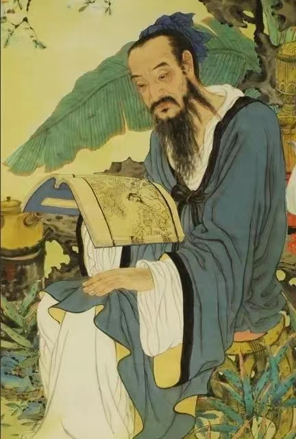
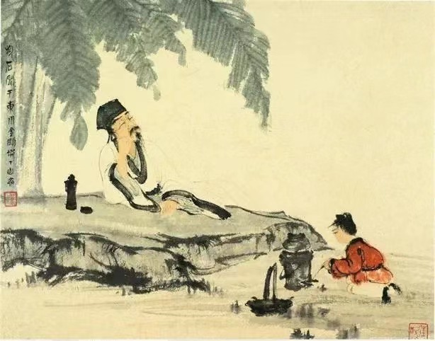

历史名人
茶圣陆羽

陆羽（约733—约804），字鸿渐，唐朝唐代茶学家，复州竟陵（今湖北天门市）人，号“茶山御史” ，性诙谐，与女诗人李季兰、诗僧皎然交厚。陆羽一生嗜茶，精于茶道，唐朝上元初年（公元760年），陆羽隐居苕溪（今浙江湖州），撰《茶经》三卷，对茶的性状、品质、产地、种植、采制、烹饮、器具等皆有论述，成为世界上第一部茶叶专著，唐代茶学家，其也因此而被后人尊为“茶圣”
茶仙卢仝

自号玉川子。才华横溢而他不愿仕进，年轻时便隐居少室山茶仙谷茶仙泉饮茶作诗度日，朝廷曾两度要起用他为谏议大夫，均不就。曾作《月食诗》讽刺当时宦官专权，受到韩愈称赞（时韩愈为河南令）。甘露之变时，因留宿宰相王涯家，与王同时遇害。其在少室山茶仙谷茶仙泉隐居时著有《茶谱》和《七碗茶诗》，对中国茶文化乃至日本茶道都影响深刻。
茶道文化
历史名人
茶的品种
茶艺